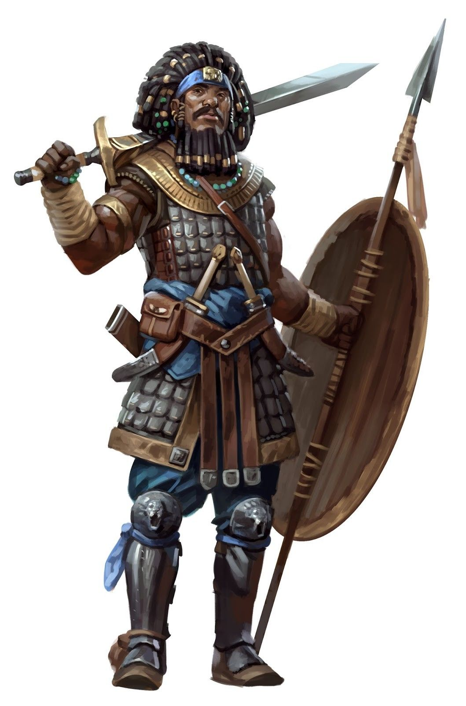

According to Wizards of the Coast, "Fighters learn the basics of all combat styles. Every fighter can swing an axe, fence with a rapier, wield a longsword or a greatsword, use a bow, and even trap foes in a net with some degree of skill. Likewise, a fighter is adept with shields and every form of armor. Beyond that basic degree of familiarity, each fighter specializes in a certain style of combat. Some concentrate on archery, some on fighting with two weapons at once, and some on augmenting their martial skills with magic. This combination of broad general ability and extensive specialization makes fighters superior combatants on battlefields and in dungeons alike."
Fighters get a bad rap in D&D sometimes, just like playing a human, because it's "plain" or "boring". I want to reassure any new or old players that this isn't true; just because more fighters are simplistic compared to spellcasters, fighters are a very interesting class to play, especially with the release of Tasha's Cauldron of Everything; fighters now have more powerful subclasses, and even magic-related subclasses.
Second wind AND action surge! Heal yourself for a bonus action and take a second action!
